これは何？
AndroidアプリのCI（継続的インテグレーション）環境を作って運用をしたときの経験を書き出したものです。
2019年7月時点でのものになりますので、時間経過によっては動作しない可能性もありますので予めご了承ください。
概要
AndroidアプリのGitHubへのPushから、CircleCIでビルド、単体テスト、UIテスト（UI Animator & Espresso on Firebase Test Lab）、
そしてDeployGateへアプリをデプロイする、までの一連の流れの雛形のようなものだと考えてください。
また記事の内容は以下のように分割して書いていく予定です。
- テストケース、詳細ははともあれ、CircleCIでCIを回してみる
- Unit Testについての解説（仮）
- UI Testについて解説（仮）
- Firebase Test Labを準備する（仮）
この記事は「テストケース、詳細ははともあれ、CircleCIでCIを回してみる」についてとなります。
ビルドの流れとインフラ
以下の図の流れでビルドからデプロイまで行います。
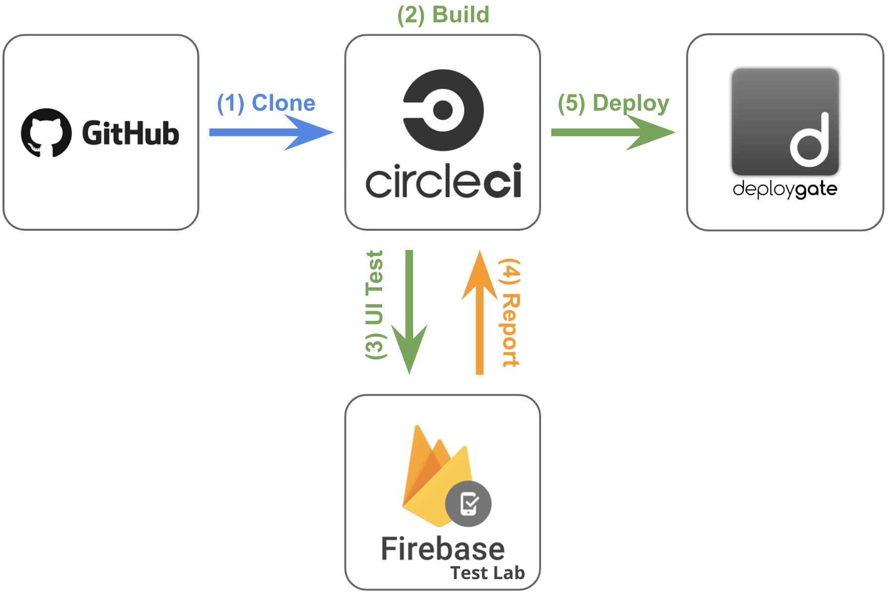
- 開発者がGitHubにコードをCommitしPushする
- CircleCIでビルドのプロセスが開始され、Unitテストが実行される
- UIテスト実行の為、CicleCIがFirebaseに向けてアプリ、テストケースを配信しUIテストを実行する
- Firebase Test LabでUIテストが実行が完了したらレポートをCircleCIに配信する
- DeployGateに向けてアプリを配信する
利用するインフラ
上記のプロセスを実行する為に、以下のインフラを利用します。おなじみの名前ばかりかもしれませんが・・・
-
GitHub
Gitで操作するリポジトリを提供するクラウドサービス
-
CircleCI
CIを行ってくれるクラウドサービス
-
Firebase Test Lab
Google社が提供するmBaaSが提供するサービスの1つで、UIテスト（Espresso、UI Automator 2.0、XCTest）をクラウドで行うサービス
-
Deploy Gate
ストア（Google Play, App Store）を通さないアプリ配布を実現するサービス（ベータテスト等に利用できる）
今回利用するAndroidのサンプルアプリ
＞ サンプルアプリのコード
Unit Test、UI Testを行う為に強引に実装している部分があります。
＞ 機能の説明
サンプルアプリの機能は以下の通りです。
- 画面右下の赤色のFabをタップするとデバイスへのファイル書き込みの許可を求められる。
- デバイスへのファイル書き込みの許可の状態に関係なく、画面中央の文字列「Hello World!!」が「1」に変化する
- 更に、画面右下の赤色のFabをタップすると、タップ毎に1つづつインクリメントされた数字が表示される
- 画面右上の3点リーダをタップすると「Reset Counter」のボタンが出現し、タップするとカウンタが「0」に変化する
こんな↓動作をするアプリです。
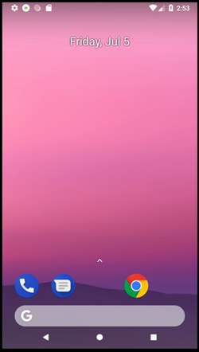
サンプルアプリの実装のアーキテクチャ
サンプルアプリのアーキテクチャはMVP(Model-View-Presenter)で構成されていて、Activityは1つです。
また今回のサンプルアプリの仕様（上記）ですと、Model（DB、API等のデータソース）が必要のないアプリになってしまいますが、
Unit Testの為、外部のREST APIへ接続を行い、データを取得しConsole出力をするロジックが無駄に実装しています。
アーキテクチャは図にすると以下のような構成です。図内では、Classが1つのブロックになっていて、ブロックの上部に白文字はInterfaceです。
例えば、MainActivityPresenterはMainActivityPresenterContractのInterfaceで構成されたClass、
よって、MainActivityInteractorはInterfaceを規定していないClassであることを表しています。
それでは、できるだけサクッとCircleCIでCIを回してみましょう。
事前準備：リポジトリを作成する
実際に動作させる場合は、上記のURLのコードをFork等をして自前で専用のリポジトリGitHubにご用意ください。
Unit Testについて
JUnitを使ってUnit Testを実行します。AndroidでのUnit Testの定番です。
モックはMockitoを使います。
サンプルアプリのUnit TestはPresenterとやり取りを横取りする形で行います。
上の図の「Point for Unit Testing」と書かれた矢印のポイントがそこです。
Unit Testの概要
コードはこのディレクトリに配置しています。
Unit Testのスクリプトはこのファイルです。
共通で使うであろう機能をMethod化して集めたClassがこちら。
テストとしては、先程説明したModelにアプリの動作に対しては無駄に実装したREST APIへ接続するロジックを使います。
REST APIからデータを取得し、取得したデータを元に正しくViewに反映される動作をするかの確認を行うのが目的です。
サンプルアプリの接続先REST APIはJSONPlaceholderです。接続するURLは/comments?postId=1で、postIdが同一であれば常に同じ値のJSONを返してくれます。常に同じJSONを返してくれるとはいえ、Unit Testではより確実性を高めたい、つまり、相手のサーバの状態に関係なく確実に同じJSONを取得できることを保証したいです。ですので、このUnit TestではMockitoを使ってJSONPlaceholderのAPIをMock（モック）することで確実に同一のJSONを受け取れるようにしています。
テストのケースは2つです。その内容は以下の通りです。
- HTTPレスポンスコード200でJSONを正しく受け取った場合の値の確認とViewに対する動作の確認
- HTTPレスポンスコード500を受け取った場合のViewに対する動作確認
なお、Unit Testの書き方（お作法）、テストケース詳細は別エントリの「Unit Testについての解説（仮）」で説明する予定です。
Unit Testをローカル環境で動作させてみる
手元で動作させてみましょう。Terminalでコードのトップに移動して以下のコマンドを実行すると、こんな出力が出てくるはずです。
$ ./gradlew test;
> Task :app:testDebugUnitTest
com.example.uitestsample.MainActivityUnitTest > sampleUnit500ServerErrorTest PASSED
com.example.uitestsample.MainActivityUnitTest > sampleUnitDataFetchSuccessTest PASSED
com.example.uitestsample.MainActivityUnitTest > sampleUnit400BadRequestTest PASSED
> Task :app:testReleaseUnitTest
com.example.uitestsample.MainActivityUnitTest > sampleUnit500ServerErrorTest PASSED
com.example.uitestsample.MainActivityUnitTest > sampleUnitDataFetchSuccessTest PASSED
com.example.uitestsample.MainActivityUnitTest > sampleUnit400BadRequestTest PASSED
BUILD SUCCESSFUL in 8s
40 actionable tasks: 10 executed, 30 up-to-date
「BUILD SUCCESSFUL in XXs」 が出たらUnit TestはテストケースをすべてSuccessで終了したという意味になります。また、ここでWarning等のメッセージが出た場合、できる限り修正してメッセージが表示されないようにすることをオススメします。
これでUnit Testの準備は完了です。
UI Testについて
Espresso、UI Automatorを使っています。それぞれの特徴は以下の通りです。
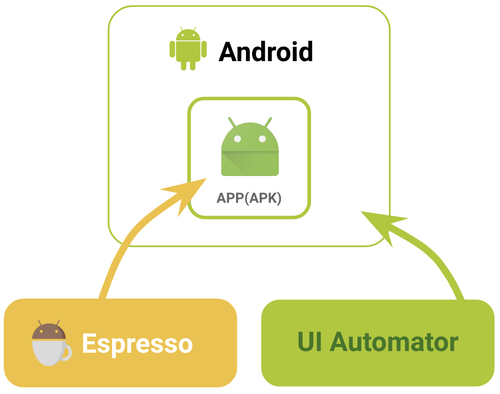
Espresso
「to write concise, beautiful, and reliable Android UI tests」と公式サイトには説明されています。特定のアプリのUIに対してのスクリプトで動作をさせることを可能にするテストフレームワークです。単一のアプリの操作を自動化する場合に使うとよいでしょう。Google社が開発していますので、Anroidの公式のテストツールと言ってよいでしょう。
UI Automator
「suitable for cross-app functional UI testing across system and installed apps.」と公式サイトに説明されている通りで、Espressoと比べると、よりAndroidのOSに近い側に位置しているテストフレームワークで、複数アプリを行き来するよう動作をスクリプトで定義することの可能です。Espressoとは違い、複数のアプリの操作を自動化する場合に使うとよいでしょう。こちらもEspressoと同じくGoogle社が開発していますので、Anroidの公式のテストツールと言ってよいでしょう。
UI Testの概要
コードはこのディレクトリに配置しています。
UI Testのスクリプトはこのファイルです。
共通で使うであろう機能をMethod化して集めたClassがこちら。
テストのケースは3つです。その内容は以下の通りです。
- パッケージ名を確認する
- アプリ起動時の画面の文字列の確認をする
- アプリ起動後、各ボタンが正しく機能し、画面表示が仕様通り更新されるかを確認する
なお、UI Test（Espresso、UI AUtomator）の書き方（お作法）、テストケース詳細は別エントリの「UI Testについての解説（仮）」で説明する予定です。
UI Testをローカル環境で動作させてみる
手元で動作させてみましょう。Terminalのコマンドラインからコードのトップディレクトリに移動して以下のコマンドを実行すると、こんな↓が出力が出てくるはずです。
$ ./gradlew connectedAndroidTest; // ← ./gradlew cAT でもOK
> Task :app:connectedDebugAndroidTest
01:52:09 V/ddms: execute: running am get-config
01:52:09 V/ddms: execute 'am get-config' on 'emulator-5554' : EOF hit. Read: -1
01:52:09 V/ddms: execute: returning
01:52:09 D/app-debug.apk: Uploading app-debug.apk onto device 'emulator-5554'
01:52:09 D/Device: Uploading file onto device 'emulator-5554'
....
01:52:13 V/ddms: execute: running pm install -r -t "/data/local/tmp/test-services-1.0.2.apk"
01:52:13 V/ddms: execute 'pm install -r -t "/data/local/tmp/test-services-1.0.2.apk"' on 'emulator-5554' : EOF hit. Read: -1
01:52:13 V/ddms: execute: returning
01:52:13 V/ddms: execute: running rm "/data/local/tmp/test-services-1.0.2.apk"
01:52:13 V/ddms: execute 'rm "/data/local/tmp/test-services-1.0.2.apk"' on 'emulator-5554' : EOF hit. Read: -1
01:52:13 V/ddms: execute: returning
01:52:13 D/app-debug-androidTest.apk: Uploading app-debug-androidTest.apk onto device 'emulator-5554'
01:52:13 D/Device: Uploading file onto device 'emulator-5554'
....
androidx.test.internal.runner.junit3.DelegatingFilterableTestSuite > [API_27_Pixel_2(AVD) - 8.1.0] SKIPPED
01:52:20 V/InstrumentationResultParser: INSTRUMENTATION_STATUS_CODE: -3
01:52:21 V/InstrumentationResultParser: INSTRUMENTATION_STATUS: class=androidx.test.internal.runner.junit3.DelegatingTestSuite
01:52:21 V/InstrumentationResultParser: INSTRUMENTATION_STATUS: current=3
01:52:21 V/InstrumentationResultParser: INSTRUMENTATION_STATUS: id=AndroidJUnitRunner
01:52:21 V/InstrumentationResultParser: INSTRUMENTATION_STATUS: numtests=8
....
01:53:07 V/InstrumentationResultParser: Time: 48.21
01:53:07 V/InstrumentationResultParser:
01:53:07 V/InstrumentationResultParser: OK (3 tests)
....
01:53:07 V/ddms: execute: returning
01:53:07 V/ddms: execute: running pm uninstall com.example.uitestsample.test
01:53:07 V/ddms: execute 'pm uninstall com.example.uitestsample.test' on 'emulator-5554' : EOF hit. Read: -1
01:53:07 V/ddms: execute: returning
01:53:07 V/ddms: execute: running pm uninstall com.example.uitestsample
01:53:07 V/ddms: execute 'pm uninstall com.example.uitestsample' on 'emulator-5554' : EOF hit. Read: -1
01:53:07 V/ddms: execute: returning
BUILD SUCCESSFUL in 1m 1s
51 actionable tasks: 10 executed, 41 up-to-date
Unit Testのときと同じく、「BUILD SUCCESSFUL in XXs」 が出たらUI TestはテストケースをすべてSuccessで終了したという意味になります。また、ここもUnit Testのときと同様にWarning等のメッセージが出てきたら、でいる限り修正することをオススメします。
Firebase Test Labでテストを行う
Firebase Test Labとは
Firebase Test LabはFirebaseがの1つのサービスとして提供されているクラウドでUI Testを行うプラットフォームです。Android(Espresso, UI Automator)、iOS(XCTest)で書かれたテストの実行に対応しています。操作は以下の2つの方法が提供されています。
どちらもの方法を使っても結果はブラウザ上で動作しているFirebaseのConsole（下図↓）から閲覧が可能になります。
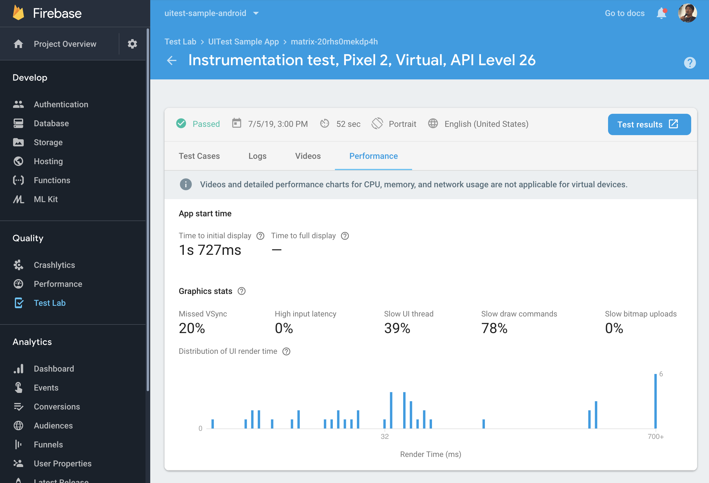
ここではGoogle Cloud SDKのCLIからCloud Testing APIを使う方法で実行します。
Google Cloud SDKのCLIから使う場合は以下の2つのAPIを有効にする必須です。必ず以下のリンクから利用するプロジェクトで有効にしてください。
（Firebase Test Labの設定については「Firebase Test Labを準備する（仮）」で詳しく行う予定です。）
Firebase Test Labをローカル環境で動作させてみる
FirebaseでのProjectの設定、GCPのアカウントの準備、Google Cloud SDKのCLIは準備は済んでいると仮定します。
また既にローカルでUIテストの動作確認も済んでいますので、早速UIテストをFirebase Test Labで動かしてみます。
（「Firebase Test Labを準備する（仮）」で詳しく説明する予定です。）
// Cloud Testing APIを有効にしたアカウントでログインし、CLIの向き先Projectを切替える
$ gcloud auth;
$ gcloud config set project [PROJECT ID];
続いて、Cloud Testing APIでUIテストを実行する為に以下をコンソールで実行します。
// 環境変数にして実行しまいます
$ TIME=$(date "+%Y%m%d_%H%M")
$ BK_OBJ_NAME="[保存するバケットのディレクトリ名]/${TIME}[今回のテストを保存するディレクトリ]"
$ GOOGLE_PROJECT_ID="[PROJECT ID]"
// コマンドを改行するときは末尾のスペースを忘れずに入れてください。
$ gcloud firebase test android run \
--type instrumentation \
--app ./app/build/outputs/apk/debug/app-debug.apk \
--test ./app/build/outputs/apk/androidTest/debug/app-debug-androidTest.apk \
--test-targets "class com.example.uitestsample.MainActivityInstrumentedTest" \
--results-dir $BK_OBJ_NAME \
--results-bucket cloud-test-${GOOGLE_PROJECT_ID} \
--directories-to-pull /sdcard/uitest/ \
--device model=Pixel2,version=26,locale=en_US,orientation=portrait \
--use-orchestrator \
--timeout 120s
実行開始が成功するとFirebaseのConsoleにこんな形↓で1行追加されます。
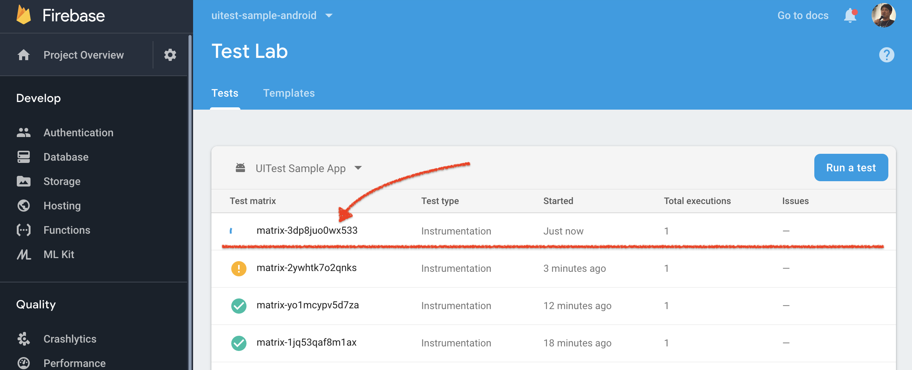
テストが終了しするとこのような出力がコンソールにされます。
Have questions, feedback, or issues? Get support by visiting:
https://firebase.google.com/support/
Uploading [./app/build/outputs/apk/debug/app-debug.apk] to Firebase Test Lab...
Uploading [./app/build/outputs/apk/androidTest/debug/app-debug-androidTest.apk] to Firebase Test Lab...
Raw results will be stored in your GCS bucket at [https://console.developers.google.com/storage/browser/[PROJECT ID]/cloud-test-uitest-sample-android/20190705-xxxxxx02/]
Test [matrix-3dp8juo0wx533] has been created in the Google Cloud.
Firebase Test Lab will execute your instrumentation test on 1 device(s).
Creating individual test executions...done.
Test results will be streamed to [https://console.firebase.google.com/project/[PROJECT ID]/testlab/histories/bh.xxxxxxxxx/matrices/918190477175429xxxx].
16:25:19 Test is Pending
16:25:40 Starting attempt 1.
16:25:40 Test is Running
16:26:42 Started logcat recording.
16:26:42 Preparing device.
16:27:15 Logging in to Google account on device.
16:27:15 Installing apps.
16:27:28 Retrieving Pre-Test Package Stats information from the device.
16:27:28 Retrieving Performance Environment information from the device.
16:27:28 Started crash detection.
16:27:28 Started crash monitoring.
16:27:28 Started performance monitoring.
16:27:42 Started video recording.
16:27:42 Starting instrumentation test.
16:28:21 Completed instrumentation test.
16:28:34 Stopped performance monitoring.
16:28:41 Stopped crash monitoring.
16:28:47 Stopped logcat recording.
16:28:47 Retrieving Post-test Package Stats information from the device.
16:28:47 Logging out of Google account on device.
16:28:53 Done. Test time = 51 (secs)
16:28:53 Starting results processing. Attempt: 1
16:29:00 Completed results processing. Time taken = 7 (secs)
16:29:00 Test is Finished
Instrumentation testing complete.
More details are available at [https://console.firebase.google.com/project/[PROJECT ID]/testlab/histories/bh.xxxxxxxxx/matrices/918190477175429xxxx].
┌─────────┬──────────────────────────┬─────────────────────┐
│ OUTCOME │ TEST_AXIS_VALUE │ TEST_DETAILS │
├─────────┼──────────────────────────┼─────────────────────┤
│ Passed │ Pixel2-26-en_US-portrait │ 3 test cases passed │
└─────────┴──────────────────────────┴─────────────────────┘
出力されているGCS bucket、More details are availabl atとして表示されているURLにアクセスするとテスト結果が書き出されているはずです。閲覧はブラウザから可能です。
DeployGateを準備する
ここを参考に、サインアップ, アプリをアップロードまで済ませましょう。
CircleCIの設定をする
.circleci/config.ymlが設定ファイルになります。
動作させるには環境変数としてDEPLOYGATE_API_KEY、GCLOUD_SERVICE_KEY、GOOGLE_PROJECT_IDの設定が必須です。
それぞれの値の取得方法は以下になります。
DEPLOYGATE_API_KEY
DeployGateのサイトにログインをしてhttps://deploygate.com/settingsの最下段に表示されています。
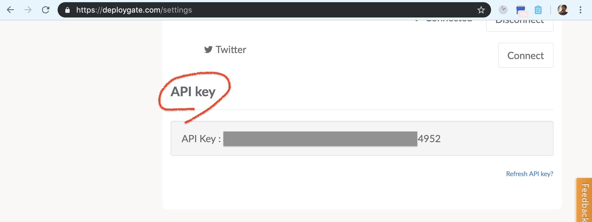
GOOGLE_PROJECT_ID、GCLOUD_SERVICE_KEY
GOOGLE_PROJECT_IDはJSON形式のファイルの内容をbase64にした値です。
- 下↓の左図のように(1)でPROJECT_IDを選択し（ここで選択した文字列が
GOOGLE_PROJECT_IDとなります）、(2)のように [IAM & admin] > [Service account] を選択してアカウントを作成します
- 次に[IAM & admin]を表示し、下↓の右図のように先程作成したアカウントの右側の鉛筆マークをクリックして、Firebase Test Lab Adminを追加します
- 再度[IAM & admin] > [Service account]を表示して、作成したアカウントの右側にある3点リーダをクリックしてJSONフォーマットのキーを作成しダウンロードします
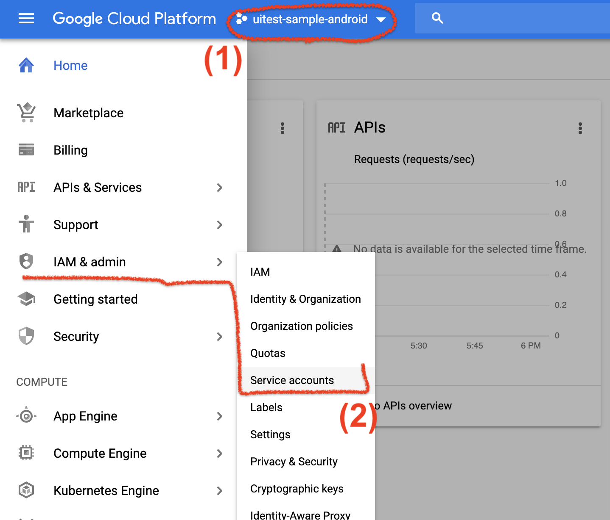
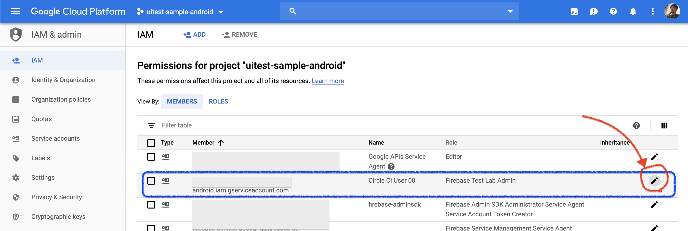
そしてダウンロードしたJSONフォーマットのキーをbase64形式に書き出します。この文字列をCircleCIに環境変数GCLOUD_SERVICE_KEYとして登録してください。
$ base64 -i [PATH TO JSON FILE];
CicleCIに環境変数として登録
取得した3つの値をDEPLOYGATE_API_KEY、GOOGLE_PROJECT_ID、GCLOUD_SERVICE_KEYを以下の図のように登録します。
対象のプロジェクトを選択し[Settings]を表示して、左ペインのメニューから[BUILD SETTINGS] > [Environment Variables]に保存します。完了すると以下の図のようになります。
画面上は指定した値の最後の4文字のみ表示された状態となります。
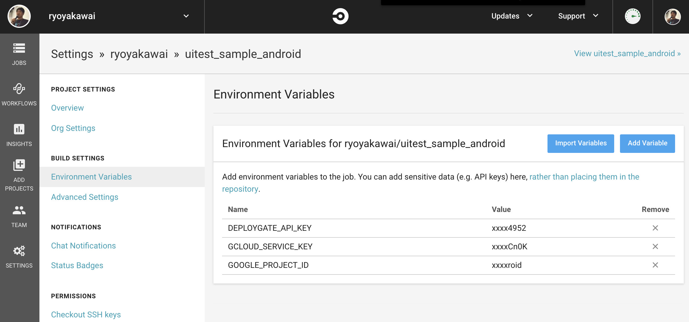
リポジトリにPushしてCircleCI上でBuildを動かす
設定は完了しましたので、準備したリポジトリのMasterブランチにコードをPushします。
PushするとCircleCI上でBuildのプロセスが動き始めます。今後はMasterにPush、またはMergeするとBuildプロセスが走るようになります。
実行レポート
CircleCIのサイトから確認することが可能です。成功すると以下のようになるでしょう。
また、Unit Testの結果は Artifacts のタブから確認することが可能です。（下図）
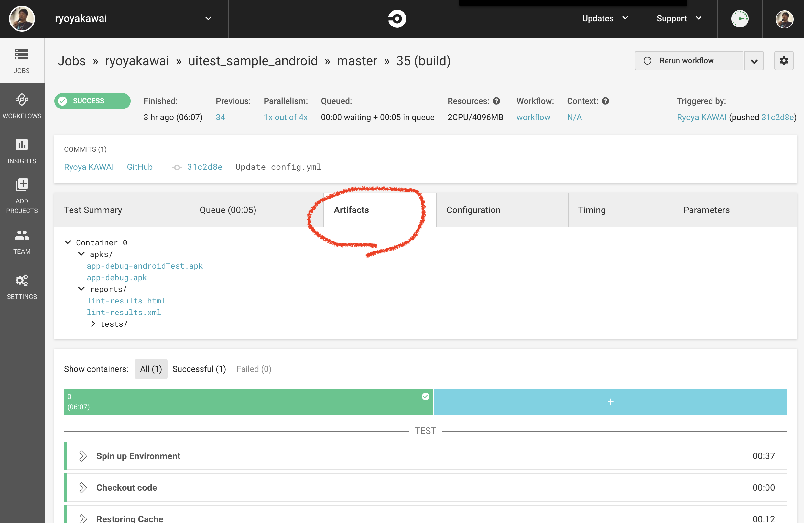
UI Testの結果は下図のようにFirebaseのConsoleから確認可能です。また、下図の赤丸内のTest Resultをクリックするとその他のデータが閲覧可能となっています。
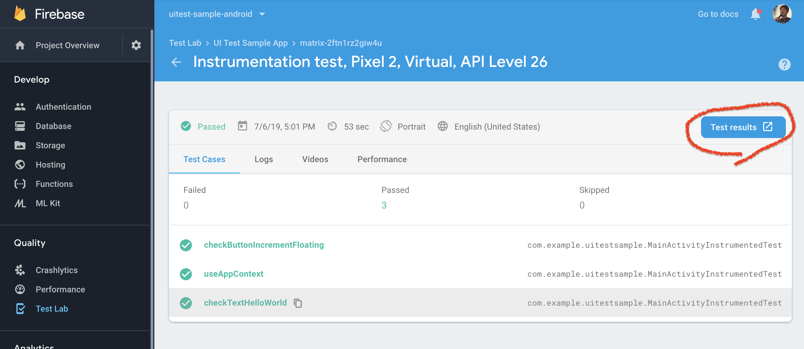
おわりに
AndroidアプリをCircleCI上でCIする流れを説明してきました。この流れでCIを回していきます。長くなってしまいましたが、いかがでしたでしょうか？
この流れを作るのに多くのサイトにお世話になりました。この記事をご覧になっている方々がサクっとCI環境を作成することができることで、
世界を変えるであろう素晴らしいアプリの開発に時間を注ぐことに少しでもお力になれたら嬉しいです。
なお、今回のUI Testはネットワークアクセスに依存する部分が少なかったのですが、そうでない場合は結果が不安定になりがちですので、通信中なのか、通信は完了しているのかについての何らかの目印をつける、だったりその他の工夫が必要になります。そういったところも何らかの形で共有していきたいと思っています。
それでは、引き続き詳細な解説についてもがんばって書いていきますのでよろしくお願いします。